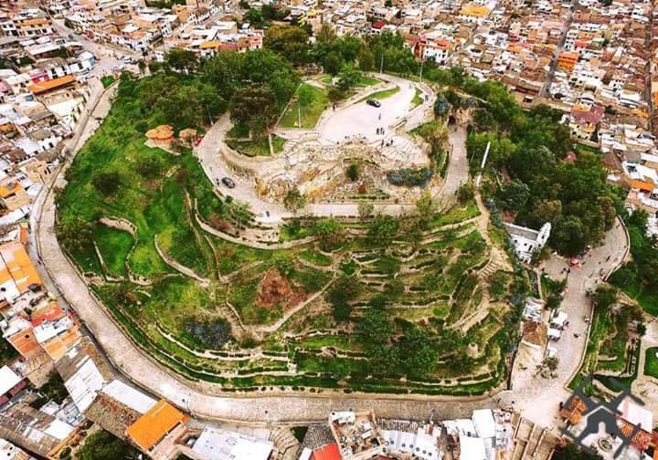
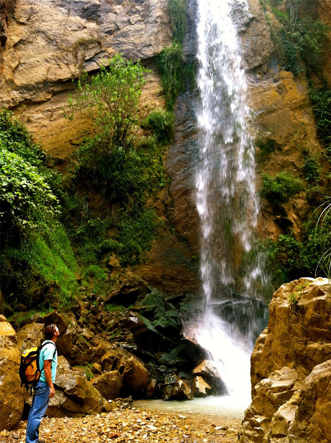

Granja Porcón

Su nombre original fue rumitiana o rumipascana que en quechua significa “Asiento de Piedra”. Formación rocosa de origen volcánico. Ubicado en la parte alta a inmediaciones de la Plaza de Armas, constituye un elemento plenamente integrado al espacio y paisaje urbano. Los colonos la llamaron en un inicio San Francisco de Monte Alberna. Después llevó el nombre con el que actualmente se le conoce como Santa Apolonia por haber sido sede de una capilla en honor a la Santa del mismo nombre.
Jardín de las hortensias

Se encuentra a 2km de la ciudad. Los cultivos ornamentales que predominan son las hortensias, oriundas de China y Japón de donde fueron llevadas a Sorochuco (Calendín) y de allí a Cajamarca. Es propiedad de la familia Valdivia Rojas, ellos están al cuidado de todo el jardín y permiten las visitas al lugar, la casona es sencillamente una belleza y tiene un estilo arquitectónico sin igual. El ingreso es libre y la familia Valdivia también nos ofrece comidas típicas, chicha de jora, artesanías, macetas de plantas de diversas especies, y por supuesto, ramos de hortensias que uno mismo puede escoger. Las hortensias pueden llegar a medir 3 metros de largo y por el tamaño de la flor, llegan a los 30cm de diámetro. Además de las hortensias, pudimos apreciar árboles nativos como el capulí.
Cumbemayo

En el km 8,5 de la carretera a Bambamarca se encuentran los talleres de los picapedreros más hábiles del Perú. Los escultores son tan hábiles que pueden hacer cualquier forma. Si está interesado en algún trabajo, puede llevar el diseño y de seguro lo harán. Un obra puede costar desde S/.1 hasta superar los S/.800.
Talleres de piedra de Huambocancha

Su nombre original fue rumitiana o rumipascana que en quechua significa “Asiento de Piedra”. Formación rocosa de origen volcánico. Ubicado en la parte alta a inmediaciones de la Plaza de Armas, constituye un elemento plenamente integrado al espacio y paisaje urbano. Los colonos la llamaron en un inicio San Francisco de Monte Alberna. Después llevó el nombre con el que actualmente se le conoce como Santa Apolonia por haber sido sede de una capilla en honor a la Santa del mismo nombre.
Mirador del cerro Santa Apolonia
Su nombre original fue rumitiana o rumipascana que en quechua significa “Asiento de Piedra”. Formación rocosa de origen volcánico. Ubicado en la parte alta a inmediaciones de la Plaza de Armas, constituye un elemento plenamente integrado al espacio y paisaje urbano. Los colonos la llamaron en un inicio San Francisco de Monte Alberna. Después llevó el nombre con el que actualmente se le conoce como Santa Apolonia por haber sido sede de una capilla en honor a la Santa del mismo nombre.
Ventanillas de Otuzco

Conocida arqueológicamente como necrópolis de Otuzco. Su denominación, “ventanillas”, proviene del aspecto que ofrecen como conjunto de cavidades dispuestas en hileras consecutivas horizontales. Las ventanillas son concavidades de forma cuadrada y rectangular, talladas en bajo relieve en una superficie rocosa de origen volcánico. Algunas evidencias permiten señalar que corresponden a la cultura Cajamarca, que tuvo influencia entre los años 300 y 800 dc.
Los Baños del Inca

Los Baños del Inca poseen aguas termales de temperaturas superiores a 70ºC (158ºF). Los minerales que las componen poseen propiedades terapéuticas para el tratamiento de afecciones a los huesos, sistema nervioso, piel e incluso se dice que cura la gastritis. Uno de los principales atractivos de este lugar es el Pozo del Inca, ubicado al interior del complejo de Baños.
Ventanillas de Combayo

Las ventanillas de Combayo es un sitio arqueológico situado en el distrito de La Encañad a 35 km de la ciudad de Cajamarca. El sitio abarca unas 20 hectáreas. La criptas cumplía su función de recinto funerario. Se encuentran en la ladera de un cerro, el mismo que levanta sobre los terrenos de una antigua hacienda y ahora poblada por una nutrida y entusiasta comunidad rural, que tiene desde tiempos atrás el nombre de Combayo. Precisamente por encontrarse un tanto aislada la zona “Las Ventanillas” están bastantes conservadas. Incluso quienes la han visitado dicen que son más atractivas que las de Otuzco. Toca visitar.
Centro arqueológico Callacpuma

Callacpuma, voz quechua que significa cerro del puma, se encuentra ubicado a 12 kilómetros de la ciudad de Cajamarca, entre los distritos de Llacanora y Los Baños del Inca. El cerro alberga pinturas rupestres, con diseños de figuras antropomorfas, zoomorfas y geométricas, las cuales se encuentran repartidas en un área que abarca un total de 254 hectáreas, entre los 2650 y 3120 m.s.n.m.
La Collpa

Es uno de los atractivos turísticos de los alrededores de Cajamarca se ubica a 8 Km del centro de la ciudad, además de ello el llamado de vacas por su nombre, es lo que destaca de este centro turístico.
Cataratas de Llacanora
Dos hermosas y grandes cataratas en el distrito de Llacanora, a 30 minutos de la ciudad de Cajamarca.
Laguna San Nicolás

La laguna es brava. Nadie se puede acercar porque está encantada
, narra un poblador de la zona. Ir a la laguna San Nicolás en el distrito de Namora, a 35 minutos de la ciudad de Cajamarca, es ir al encuentro de la paz, tranquilidad
y al contacto directo de la madre naturaleza. Este hermoso espejo de agua azulina se encuentra a más de 3 m.s.n.m., está llena de misticismo, encantos, historias y verdor, acompañada de aves como los patos silvestres y los quindes,
más conocido como picaflores o colibrís. Puede navegar la laguna en pequeñas balsas de totora.
Santuario Virgen del Rosario en Polloc

Ubicado en el centro poblado El Rosario de Polloc, el templo maravilla a sus visitantes con sus paredes, columnas, techos y piso decorados bajo la técnica de mosaico. El santuario de la Virgen del Rosario es el principal atractivo del centro poblado “El Rosario de Polloc” y no podía ser de otra forma. Quién ingresa a este lugar queda maravillado por su belleza.